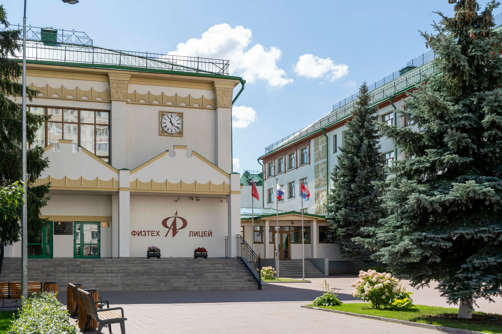

Problem
Modern English changes quickly, but school textbooks do not keep up. Many students struggle to understand and use new vocabulary that appears online.

How digital communication, society and education reshape English vocabulary in real time.
A modern look at how English evolves through technology, social interaction, and education.
The English language is spoken across the globe and remains one of the most dynamic language systems today. Native speakers, second-language users, and students all contribute to its development. As a result, neologisms (new words) emerge constantly, especially in online communication, media, and everyday speech.
In earlier periods, new words were adopted slowly over many years. Today, digital communication accelerates this process dramatically, allowing neologisms to spread worldwide in a very short time.
Modern English changes quickly, but school textbooks do not keep up. Many students struggle to understand and use new vocabulary that appears online.
Technology and internet communication intensify lexical change, making neologisms a central part of contemporary language learning.
Many neologisms from 2015-2024 originated in digital communication and reflect technological and social change; focused exercises and questionnaires can improve student recognition and usage.
Identify how neologisms are formed and function in modern English, trace emergence trends, and assess influence on society.
The project combines linguistic analysis with practical school-level teaching tools.
Contemporary English language.
Neologisms of the last decade: origin, structure, semantic value, and role in language development.
The study focuses on the latest decade, helping identify current and still-emerging vocabulary trends.
Neologisms work as linguistic sensors: they capture social, technological, and cultural shifts while English adapts in real time.
Compounding, blending, clipping, affixation, and borrowing remain key mechanisms. Examples: cybersecurity, hangry, post-truth.
Social media speeds up creation and spread of terms like selfie, vlogger, clickbait, and influencer.
Technology, science, politics, health crises, and digital culture produced terms such as deepfake, metaverse, and infodemic.
Meaning instability, delayed dictionary recognition, and translation barriers complicate teaching and standardization.
Thematic clusters, contextual examples, and etymological explanations support retention and meaningful classroom use.
Corpus tools reveal frequency, collocations, and whether a neologism is becoming stable or fading out.
Global communication accelerates adoption of English neologisms but also raises concerns about linguistic diversity.
Neologisms are essential for understanding contemporary English and for designing relevant language education.